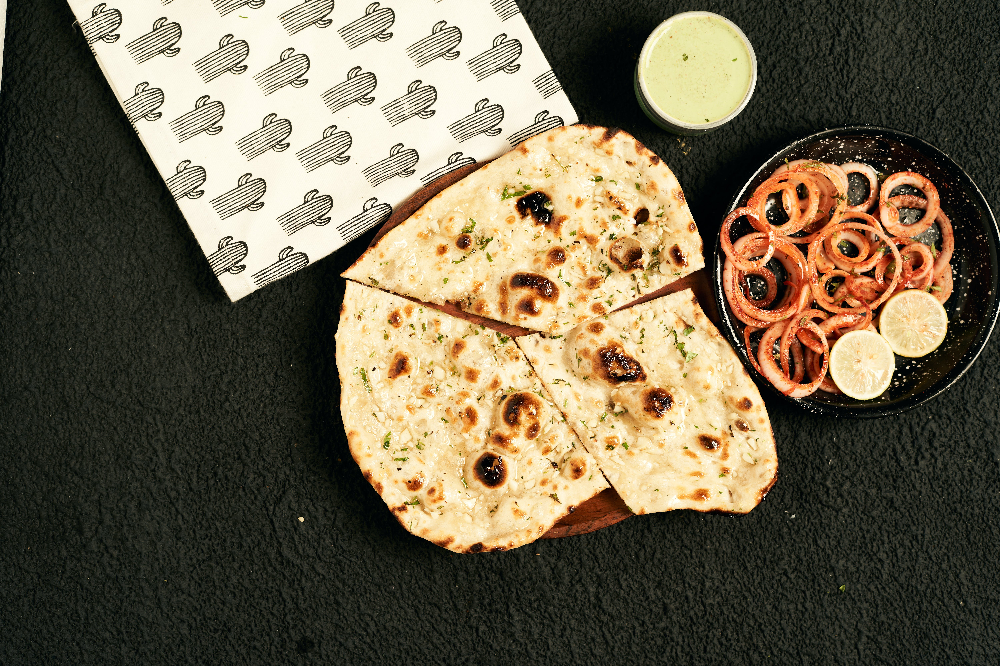

Old Town Draught House
Located right off of Spring Garden in the middle of campus, Old Town Draught House offers a cozy pub
atmosphere and a wide selection of craft beers on tap. If you're in the mood for a burger or a
chicken philly with your beer, this is the place to go!
Address: 1205 Spring Garden Street, Greensboro, NC 27401
Hours: Every Day: 11:00 AM - 11:00 PM
Recommended Dishes:
BEER - With some new and upcoming local beers, or even your favorite
popular draft beers, Old Town has you covered!
Add-ons.
Price: $2.75
BURGER - Sometimes you want a tried and true burger! You can get it
however you like, but by default it comes with patty, lettuce, cheese, tomato, and mayo.
Served with fries.
Add-ons.
Price: $12.00
CHICKEN PHILLY - One of the most popular dishes on the menu! Imagine
a philly cheesesteak but with chicken, and a secret sauce. Comes with a side of fries.
Add-ons.
Price: $8.00
Special promotion: Enjoy $1 off any craft beer during Happy Hour!
Raaz Indian Kitchen
I am a huge Indian food lover, but sometimes it is just too far away to satisfy those taste buds you
have! Here comes Raaz Indian Kitchen, just walking distance from the Petty building! I recommend
their Lamb Korma, Garlic Naan, and Gobi!
Address: 427 Tate Street, Greensboro, NC 27403
Hours: Mon-Sat: 11:30 AM - 10:00 PM, Sun: Closed
Recommended Dishes:
LAMB KORMA - This lamb korma made with cashew nuts and aromatic
spices is a delicious entree. The entire family is going to love this, guarantee! Comes with
a side of rice.
Add-ons.
Price: $15.00

NAAN BREAD - everyone knows about naan bread! This is hte perfect
side to your favorite dishes.
Add-ons.
Price: $2.75
ALOO GOBI - Aloo gobi (potatoes & cauliflower) is a popular dish in
which potatoes and cauliflower are cooked with onions, tomatoes and spices.
Add-ons.
Price: $4.75
Sushi Republic
At Sushi Republic, we're passionate about sushi. Our skilled chefs create beautiful and delicious
sushi rolls using the freshest ingredients.
Address: 329 Tate Street, Greensboro, NC 27405
Hours: Mon-Fri: 11:30 AM - 2:30 PM, 5:00 PM - 9:30 PM, Sat 5:00 PM - 9:30 PM, Sun:
Closed
Recommended Dishes:
SUSHI ROLLS - Everyone knows sushi! You can choose from over 15
different types of sushi. Each order comes with 10 rolls.
Add-ons.
Price: $25.00
SASHIMI- If you love sushi, then you love sashimi! You can choose
from 5 different types of sashimi. Each order comes with 10 pieces.
Add-ons.
Price: $20.00
MISO SOUP - The perfect warm side to your order. Don't forgrt to
order another one for takeaway!
Add-ons.
Price: $3.00